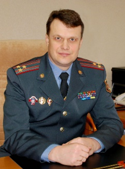

| 2019 |
Первый собственник
 Ковальчук Александр Александрович (родился 6 февраля 1972 года в д. Летковщина Слуцкого района Минской области). Окончил Минское высшее военное командное училище (1993г.), Академию МВД Республики Беларусь (2002г.). 2007 – 2009 гг. – начальник отдела внутренних дел Бобруйского райисполкома. 2009 – 2014 гг. – первый заместитель начальника УВД Могилевского облисполкома – начальник криминальной милиции. 2014 – 2018 гг. – начальник УВД Могилевского облисполкома. С 1 февраля 2018 года назначен на должность начальника УВД Минского облисполкома. |